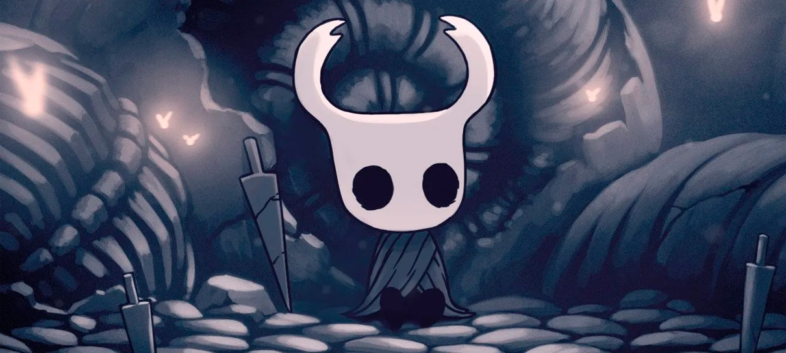

|
| A história completa de Hollow Knight é muito profunda e contada de forma sutil e indireta. O único jeito de saber o que
aconteceu com o mundo em ruínas que o jogador se encontra é ele explorar cada região do mapa gigantesco do jogo, conversar com personagens —
sobreviventes da Infecção ou exploradores e caçadores de tesouro que vieram de fora do reino — enfrentar inimigos, achar tesouros e então
ligar os pontos da história.

O jogo começa com o personagem principal, The Knight ("O Cavaleiro" em inglês), entrando nas ruínas de Hallownest,
um reino que era habitado por insetos antropomórficos, e vai descobrindo, conforme dialoga com os personagens e explora Hallownest,
que ele é um dos receptáculos criados para selar uma entidade divina chamada Radiance (Esplendor) que a muito era idolatrada até ser esquecida.
Essa entidade foi o que causou a ruína de Hallownest; ela não possui um corpo físico, mas ela consegue invadir a mente dos insetos, os levando
à loucura e assim criando "A Infecção".
Numa tentativa de impedi-la, o governador de Hallownest, o Pale King (Rei Pálido) criou vários receptáculos
com uma substância chamada Void (Vazio) para sela-la porém só um desses receptáculos conseguiu ser "vazio" e desprovido de emoções o bastante para a tarefa e
assim ganhando o nome Hollow Knight (Cavaleiro Vazio). Com o seu receptáculo perfeito, o Pale King selou Radiance dentro do Hollow Knight em um templo e assim
trazendo paz para Hallownest até que ela consegue romper o selo e infectar todos de novo. Com isso o reino entrou em colapso, cidades foram destruídas,
insetos foram mortos e o Pale King, junto com o seu palácio, desapareceu. Depois que The Knight, ou seja o jogador, descobre tudo que aconteceu no passado cabe a ele abrir o selo,
derrotar Hollow Knight e carregar o fardo de ter Radiance aprisionada dentro de si ou enfrentar a entidade e por um fim ao caos que ela trouxe.
|
|
|
|
|